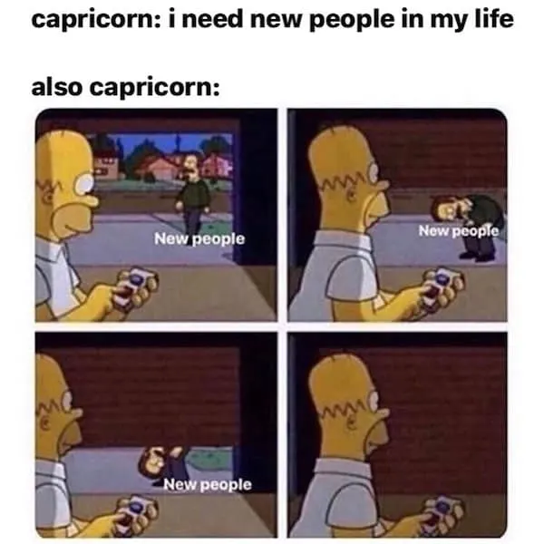
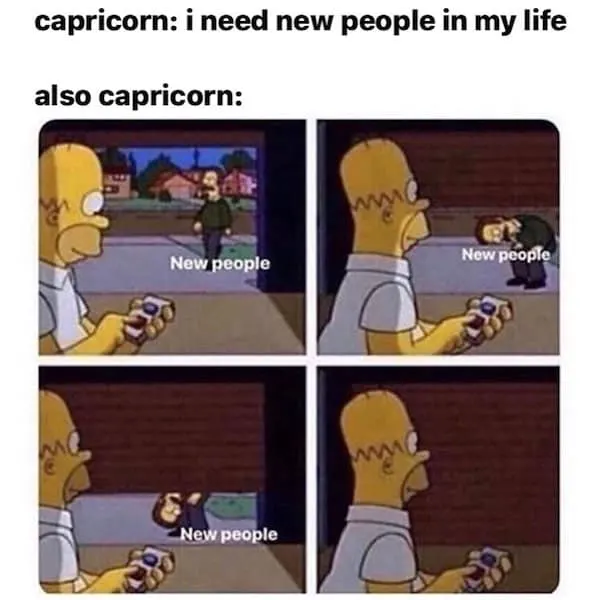

မကာရရာသီ

မကာရရာသီအကြောင်းတစ်စေ့တစ်စောင်း
သူတို့ရဲ့အမူအကျင့်များ
Self-control ကိုကောင်းစွာလုပ်နိုင်တဲ့ sign ဖြစ်ပါတယ်။အမှားကိုသိရင် ပြုပြင်ဖို့ဝန်မလေးပါဘူး။အပေါင်းအသင်းနည်းသလို လောဘလည်းနည်းကြပါတယ်။
နက်နဲစွာတွေးခေါ်တတ်ကြပြီး စိတ်အပြောင်းအလဲမြန်ပါတယ်။လက်တွေ့မှာ လွတ်လပ်စွာနေထိုင်တတ်ကြပြီး သူတို့လိုချင်တာကို ရအောင်ယူတတ်တဲ့ စိတ်လေးလည်းရှိပါတယ်။
သူတို့သာ ညစ်ပတ်ရင်ညစ်ပတ်မယ် သူတို့နေတဲ့နေရာကိုတော့ အမြဲရှင်းလင်းနေမှ ကြိုက်တယ်ဆိုတဲ့ လူ့ဂွစာရာသီခွင်ဖြစ်သည့်အပြင် အင်မတန်မှကိုအငြင်းသန်ပါတယ်။ကလေးတစ်ယောက်လို စိတ်ကူးယဥ်တတ်ပြီး တစ်ကိုယ်ကောင်းလည်းဆန်ပါတယ်။
အချစ်ရေးမှာတော့ "တစ်ယောက်ဆိုတစ်ယောက်" "ပိတောက်ဆိုပိတောက်" တွေပါ။မြေဓာတ်သမားတွေပီပီ သစ္စာရှိရှိချစ်တတ်ပါတယ်။ ဒါမဲ့ ပလေးခံရတာများပါတယ်🤗
ဝီရိယကောင်းသော ရာသီခွင်ဖြစ်ကာ တာဝန်ကျေပွန်ကြပါတယ်။ ဘယ်လိုအခြေအနေမှာမဆို သူတို့တာဝန်ယူထားသောကိစ္စရပ်တွေကို ဆုံးခန်းတိုင်အောင် ပြုလုပ်လေ့ရှိသောကြောင့် လုပ်ငန်းခွင်မှာ နာမည်ကောင်းရကြတဲ့ရာသီခွင်လည်း ဖြစ်ပါတယ်❣
မကာရရာသီရဲ့သမိုင်းကြောင်းအကျဉ်းချုပ်
Capricorn ရာသီခွင်ကို Babylonian တွေက အစောပိုင်းမှာ ကြယ်တွေကို ကြည့်ရှုသိရှိခဲ့ပြီး၊ ကြယ်စုများသည် ဆွဲသန့်သော သဲနှင့် နွားပုံစံပေါင်းစပ်ထားသည့် ပုံစံ (Sea-Goat) နှင့် ဆင်တူသောကြောင့် အစောပိုင်းမှာ “The Goat-Fish” ဟု ခေါ်ခဲ့ကြသည်။ နောက်ပိုင်း Greek ယဉ်ကျေးမှုအရ Pan ဒါမှမဟုတ် ပုံပြင်ဆိုင်ရာ သဘာဝအရ “Capricorn” ဟု အမည်ပြောင်းခဲ့ပြီး၊ လက်တင်စကားဖြင့် “နွားသိုက်သရေ” အဓိပ္ပာယ် ရှိသည်။ အနောက်တိုင်းဇာတာဗေဒတွင်လည်း Capricorn ဟူ၍ သတ်မှတ်ပြီး၊ တည်ငြိမ်မှု၊ တာဝန်ယူမှုနှင့် အောင်မြင်မှု စိတ်ဓာတ်ကို ကိုယ်စားပြုသည်။
မကာရရာသီတွေနဲ့သင့်တော်မယ့်အလုပ်နယ်ပယ်များ
မကာရရာသီဖွားထင်ရှားကျော်ကြားသောပုဂ္ဂိုလ်များ
Martin Luther King Jr
Jan 15, 1929
Civil Rights Leader
Visionary,justice-oriented
Michelle Obama
Jan 17,1964
Lawyer
Organized,responsible
Denzel Washington
Dec 28,1954
Actor
Hardworking,disciplined
Kate Middleton
Jan 9,1982
Royal family member
Graceful,patient
CAPRICORN TRAITS
 
